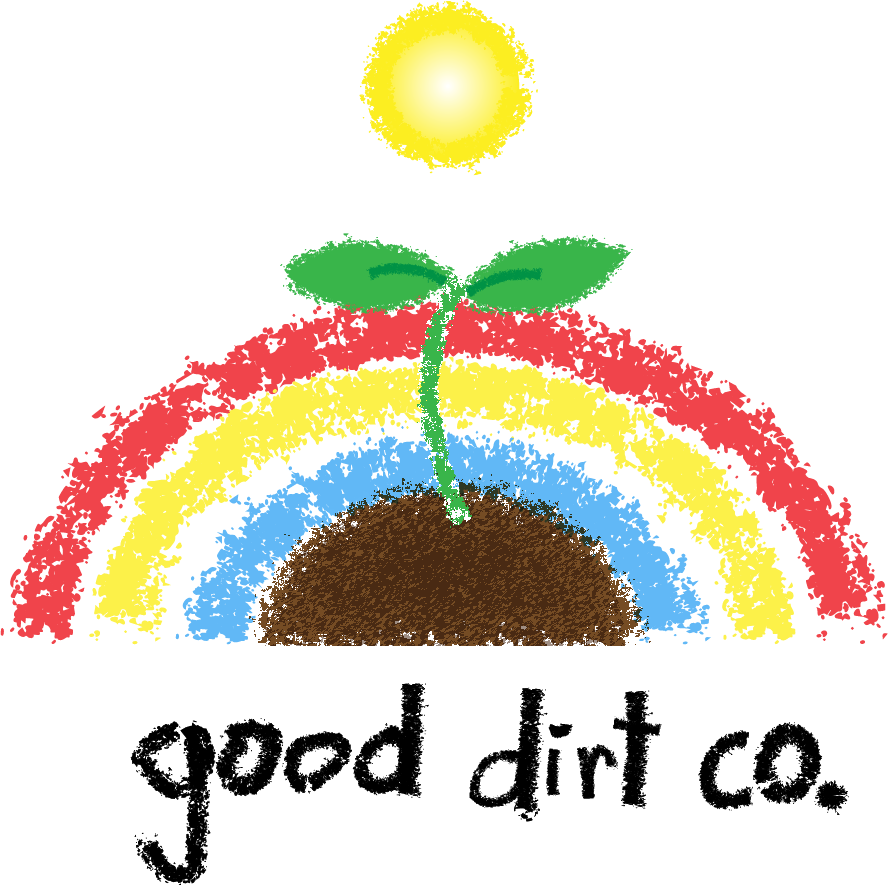
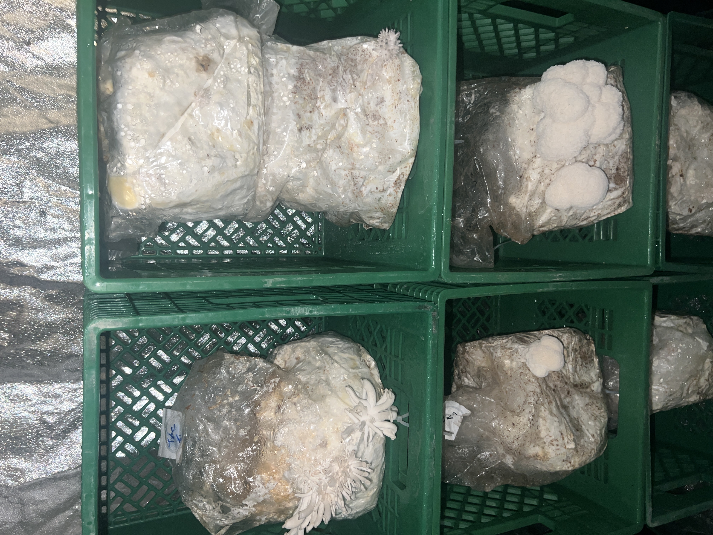
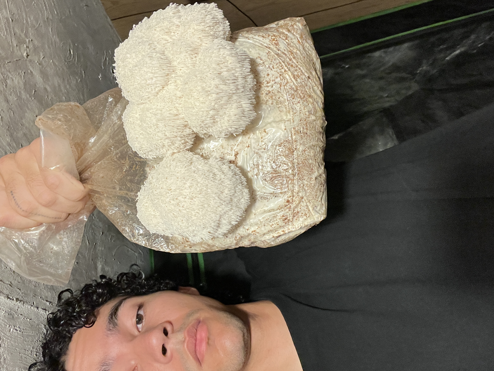
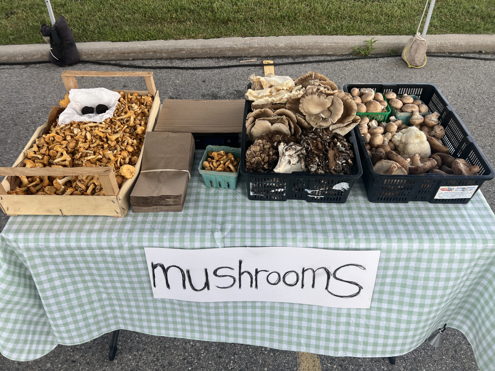

A concept, and a real market stall
Good Dirt Co.
A business built around growing things: teaching, mushroom kits and permaculture backyards. The mushrooms were real.




How the parts feed each other
Education brings people in. Products let them start growing at home. Services design their whole backyard, and every finished garden becomes something to teach from.
Where it came from
I got into permaculture and growing mushrooms. Good Dirt Co. was the idea of turning that into a business, and not just one product: a small ecosystem of teaching, products and services that feed each other.
The idea
- Education: teach people about sustainability and growing their own food.
- Products: mushroom grow kits, and fresh mushrooms.
- Services: designing permaculture backyards for people who want to go all in.
The part that was real
I grew mushrooms and sold them at the farmers' market in Woodbridge. That's when it felt worth it: people stopped, asked questions, and left their contact details because they were interested in what I was doing.
Most of my projects live on a screen. This one touched the real world: soil, a stall, and people buying something I grew. I'm proud of that.
The look
Sandbox: a little rough and a little childish, on purpose. It reminds me of a lemonade stand, and of the community I had as a kid.
Where it is
My interest faded and it's on pause. I still think it's valuable. Knowing how to connect with the earth is realer than any internet venture, and it's a skill I'm glad to have.